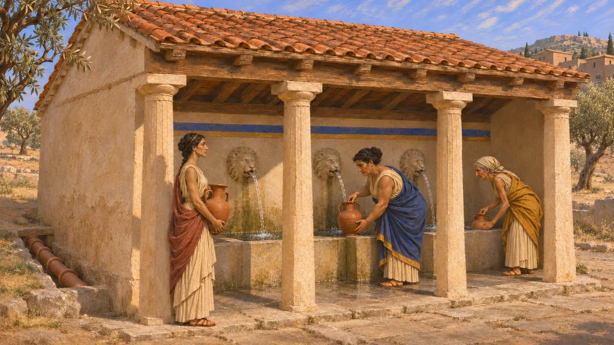
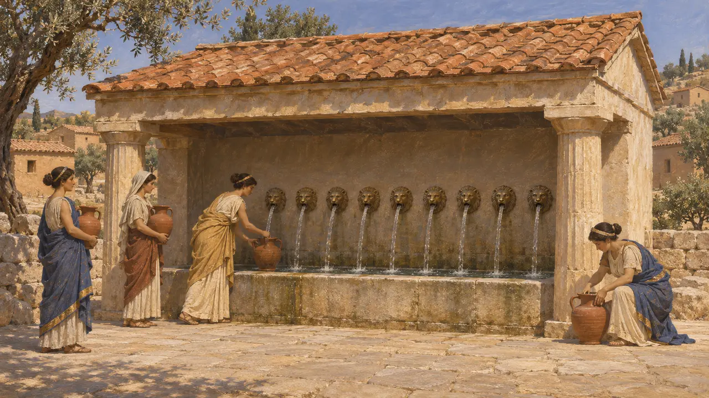
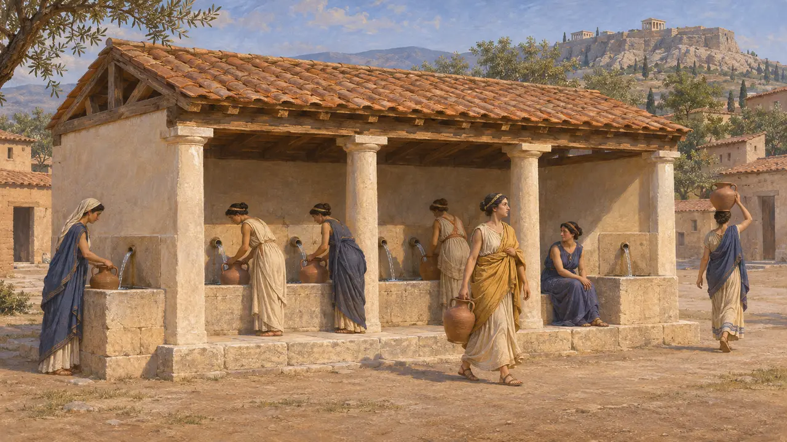
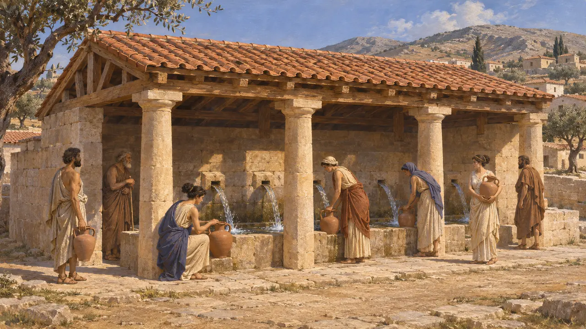
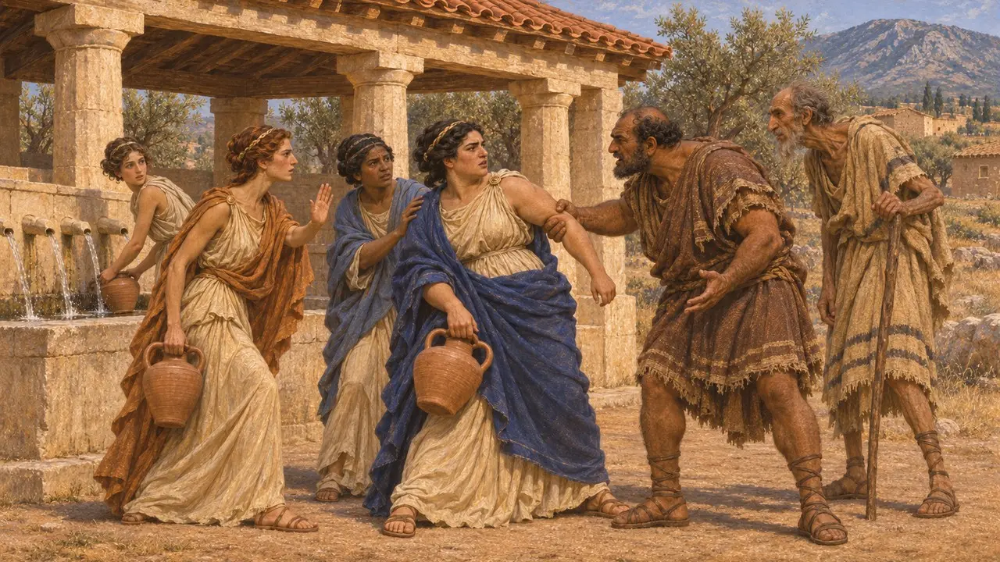

Casa della fontana
Fontana pubblica coperta delle città greche, VI-V secolo a.C.
Una casa della fontana era un edificio coperto dove l'acqua di sorgente, spesso condotta da tubature sotterranee, sgorgava da bocche in vasche dove la gente riempiva le proprie brocche. Diversi tiranni greci della seconda metà del VI secolo ne costruirono come opere pubbliche, e l'Enneakrounos di Atene, le Nove Bocche, era la più celebre. Davano alle città acqua pulita e fungevano da luoghi d'incontro quotidiani.
Nel gioco: Nei livelli di Sardi e della Grecia la Casa dell'acqua assume questa forma; le abitazioni entro sei caselle vi si lavano e le Residenze nobiliari ne richiedono una. Tucidide 2.15 parla di Nove Bocche, non di Nove Sorgenti, e menziona riti, non abluzioni.

Bocchette, vasche e condotte
Nelle fontiGli esempi portati alla luce dagli scavi condividono una pianta comune: una sala coperta, spesso con una facciata colonnata, dove l'acqua sgorgava da bocchettoni, talvolta a forma di testa di leone, o si raccoglieva in vasche di attingimento. Nell'Agorà di Atene una conduttura di tubi in terracotta, posata in un canale scavato nella roccia nella seconda metà del VI secolo, alimentava la Fontana di Sud-Est. I vasi attici per l'acqua dipinti alla fine del VI secolo mostrano spesso donne che riempiono le loro brocche presso edifici di questo tipo.
J. M. Camp, The Athenian Agora, 1986

Tucidide sulle Nove Bocche
Racconto anticoTucidide descrive una fontana dell'antica Atene che i tiranni avevano fatto sistemare, tanto da essere chiamata Enneakrounos, le Nove Bocche. Prima di allora, dice, le sorgenti erano a cielo aperto e si chiamavano Kallirrhoe. Aggiunge che gli Ateniesi usavano ancora la sua acqua prima delle nozze e per altri riti sacri, usanza che egli considera una prova di dove sorgesse la città delle origini.
Thucydides 2.15

Dove si trovava l'Enneakrounos
ContesoTucidide collega la fontana agli antichi santuari a sud dell'Acropoli, e il suo nome più antico, Kallirrhoe, fu poi dato a una sorgente nel letto dell'Ilisso. Pausania, che scrive nel II secolo d.C., colloca l'Enneakrounos presso l'Agorà. Gli archeologi che hanno scavato l'Agorà hanno spesso fatto corrispondere il suo racconto alla Casa della fontana sud-orientale, del 530-520 circa, mentre altri collocano la fontana dei Pisistratidi presso l'Ilisso. La questione è ancora aperta.
Thucydides 2.15; Pausanias 1.14.1

I tiranni e l'acqua pubblica
Racconto anticoL'approvvigionamento idrico era un'opera pubblica prediletta dai tiranni del VI secolo. Erodoto loda la galleria che Eupalino di Megara scavò attraverso una collina a Samo per portare l'acqua in città. Non nomina il sovrano, ma la galleria viene di solito datata all'epoca di Policrate. Pausania attribuisce a Teagene, tiranno di Megara, una casa della fontana in quella città. Opere simili procuravano probabilmente ai sovrani il favore del popolo e ne mostravano le risorse.
Herodotus 3.60; Pausanias 1.40.1

Le figlie alla fontana
Leggenda posterioreErodoto riporta una leggenda ateniese di un passato remoto. Le fanciulle ateniesi si recavano ad attingere acqua alla fonte Enneacrunos, poiché, spiega, a quei tempi non esistevano schiavi domestici, e i coloni pelasgi stanziati ai piedi del monte Imetto le aggredirono. Per questo i Pelasgi furono cacciati dall'Attica. Erodoto riferisce anche la versione di Ecateo, secondo cui gli Ateniesi li espulsero per invidia delle loro terre ben coltivate.
Herodotus 6.137
Fonti
- Thucydides 2.15
- Pausanias 1.14.1
- Herodotus 6.137
- Herodotus 3.60
- Pausanias 1.40.1
- J. M. Camp, The Athenian Agora, 1986